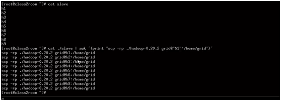

hadoop(1.1.2)+hbase0.98+hive+pig+sqoop+mysql+vsftp+tomcat+linux搭建命令
一、linux基本操作
Linux系统下要和外界进行文件传输需要使用ftp，对此需要搭建ftp服务
(1)vsftp install :
reference file :/mnt/linuxshare/RHEL 5.2下vsftp配置全教程 - 51CTO.COM.htm
install:
rpm -ivh vsftpd-2.0.5-12.el5.rpm
start:
service vsftpd start
安装完成后，vsftpd配置文件为/etc/vsftpd/vsftpd.conf，通过以下命令可启动vsftpd并将其设置为自动启动。
service vsftpd restart
chkconfig vsftpd on
使用ftp需要关闭防火墙，把Linux的防火墙清空:
iptables -F
service iptables stop
chkconfig iptables off
(2)linux cloudy install package（linux云应用安装）
/mnt/linuxshare/epel-release-5-4.noarch.rpm
(3)Linux下配置环境变量：
1.修改/etc/profile文件
如果你的计算机仅仅作为开发使用时推荐使用这种方法，因为所有用户的shell都有权使用这些环境变量，可能会给系统带来安全性问题。
(1)用文本编辑器打开/etc/profile
(2)在profile文件末尾加入：
JAVA_HOME=/usr/share/jdk1.5.0_05
PATH=$JAVA_HOME/bin:$PATH
CLASSPATH=.:$JAVA_HOME/lib/dt.jar:$JAVA_HOME/lib/tools.jar
export JAVA_HOME
export PATH
export CLASSPATH
一、linux基本操作
Linux系统下要和外界进行文件传输需要使用ftp，对此需要搭建ftp服务
(1)vsftp install :
reference file :/mnt/linuxshare/RHEL 5.2下vsftp配置全教程 - 51CTO.COM.htm
install:
rpm -ivh vsftpd-2.0.5-12.el5.rpm
start:
service vsftpd start
安装完成后，vsftpd配置文件为/etc/vsftpd/vsftpd.conf，通过以下命令可启动vsftpd并将其设置为自动启动。
service vsftpd restart
chkconfig vsftpd on
使用ftp需要关闭防火墙，把Linux的防火墙清空:
iptables -F
service iptables stop
chkconfig iptables off
(2)linux cloudy install package（linux云应用安装）
/mnt/linuxshare/epel-release-5-4.noarch.rpm
(3)Linux下配置环境变量：
1.修改/etc/profile文件
如果你的计算机仅仅作为开发使用时推荐使用这种方法，因为所有用户的shell都有权使用这些环境变量，可能会给系统带来安全性问题。
(1)用文本编辑器打开/etc/profile
(2)在profile文件末尾加入：
JAVA_HOME=/usr/share/jdk1.5.0_05
PATH=$JAVA_HOME/bin:$PATH
CLASSPATH=.:$JAVA_HOME/lib/dt.jar:$JAVA_HOME/lib/tools.jar
export JAVA_HOME
export PATH
export CLASSPATH
(4)jdk的安装与卸载
jdk卸载
卸载默认的：
用root用户登陆到系统，打开一个终端输入
rpm -qa|grep gcj
显示内容其中包含下面两行信息
java-1.4.2-gcj-compat-1.4.2.0-27jpp
java-1.4.2-gcj-compat-devel-l.4.2.0-27jpp
卸载
rpm -e java-1.4.2-gcj-compat-devel-l.4.2.0-27jpp
rpm -e java-1.4.2-gcj-compat-l.4.2.0-27jpp
卸载其他自己安装的JDK就直接用rpm -e
卸载rpm版的jdk：
#rpm -qa|grep jdk
显示：jdk-1.6.0_10-fcs
卸载：#rpm -e –nodeps jdk-1.6.0_10-fcs
(5)设置环境变量汇总
1、/etc/profile设置环境变量
a. 你要将 /usr/share/jdk1.5.0_05jdk 改为你的jdk安装目录
b. linux下用冒号“:”来分隔路径
c. $PATH / $CLASSPATH / $JAVA_HOME 是用来引用原来的环境变量的值,在设置环境变量时特别要注意不能把原来的值给覆盖掉了，这是一种常见的错误。
d. CLASSPATH中当前目录“.”不能丢,把当前目录丢掉也是常见的错误。
e. export是把这三个变量导出为全局变量。
f. 大小写必须严格区分。
2. 修改.bashrc文件
这种方法更为安全，它可以把使用这些环境变量的权限控制到用户级别，如果你需要给某个用户权限使用这些环境变量，你只需要修改其个人用户主目录下的.bashrc文件就可以了。
(1)用文本编辑器打开用户目录下的.bashrc文件
(2)在.bashrc文件末尾加入：
set JAVA_HOME=/usr/java/jdk1.7.0_55
export JAVA_HOME
set PATH=$JAVA_HOME/bin:$PATH
export PATH
set CLASSPATH=.:$JAVA_HOME/lib/dt.jar:$JAVA_HOME/lib/tools.jar
export CLASSPATH
(3)重新登录
3. 直接在shell下设置变量
不赞成使用这种方法，因为换个shell，你的设置就无效了，因此这种方法仅仅是临时使用，以后要使用的时候又要重新设置，比较麻烦。
只需在shell终端执行下列命令：
export JAVA_HOME=/usr/java/jdk1.7.0_55
export PATH=$JAVA_HOME/bin:$PATH
export CLASSPATH=.:$JAVA_HOME/lib/dt.jar:$JAVA_HOME/lib/tools.jar
(6)压缩包的压缩与解压与其他
tar -zxvf apache-tomcat-6.0.39.tar.gz
gzip -d apache-tomcat-6.0.39.tar.gz
查看当前进程
ps -ef|grep tomcat
(7)杀死进程
kill -9 idnum
命令行上网
wget http://192.168.1.126
rpm的查看与卸载
rpm: redhat package management
rpm -qa|grep jdk 查看linux安装的包
rpm -e 包名 卸载
(7)小结
/etc/profile 有用户登陆设置环境变量（命令：source /etc/profile 可以让设置生效）
/etc/bashrc 设置的命令 如果一有用户登陆就执行初始化脚本。
/home/wzq(用户) .bash_profile为单独的用户设置环境变量
/home/wzq(用户) .bashrc 为单独的用户登录时执行的脚本（执行的程序）
/etc/rc.local 开机启动执行的脚本
举例tomcat：
JAVA_HOME=/usr/java/jdk1.7.0_55
PATH=$JAVA_HOME/bin:$PATH
CLASSPATH=.:$JAVA_HOME/lib/dt.jar:$JAVA_HOME/lib/tools.jar
export JAVA_HOME
export PATH
export CLASSPATH
启动：/tomcat6/bin/startup.sh
mysqladmin -u root password "operater" 设置mysql密码
启动mysql：
service mysql start
开机启动：
chkconfig iptables on
注意：
修改MySQL数据库root用户的初始密码，先查下初始密码
[root@vmoel5u4 mysql_installer]# vi /root/.mysql_secret
设置初始密码即可
(8)修改主机名
修改当前回话的主机名：hostname hadoop
永久修改主机名文件所在目录：vi /etc/sysconfig/network
ip和主机名绑定：vi /etc/hosts 加入一行：
10.164.10.100 hadoop
重启网卡：service network restart
测试：ping hadoop
(9)SSH的免密码登陆：
ssh-keygen -t rsa 生成秘钥文件
cp ~/.ssh/id_rsa.pub ~/.ssh/authorized_keys
注意：此处一定要设置，不然jobtracker无法启动！！！另外可以把所有机器上的所有authorized_keys收集起来放在一个大的authorized_keys文件里边，然后用这个大的文件分别覆盖
所有机器的authorized_keys文件，可以实现所有机器之间的免密码登陆。
hadoop环境搭建
（10）hadoop设置环境变量
/etc/profile
export JAVA_HOME=/usr/java/jdk1.7.0_55
export HADOOP_HOME=/usr/hadoop
export PATH=.:$HADOOP_HOME/bin:$JAVA_HOME/bin:$PATH
export CLASSPATH=.:$JAVA_HOME/lib/dt.jar:$JAVA_HOME/lib/tools.jar
export JAVA_HOME
export PATH
export CLASSPATH
（11）修改配置
修改$HADOOP_HOME_HOME/conf下的hadoop-env.sh、core-site.xml、hdfs-site.xml、mapred-site.xml
细节见文档
非伪分布特殊配置
config/masters 文件里边配置jobtracker所在节点所在机器
config/slaves 文件里边配置datanode和tasktracker所在节点的机器
（12）hadoop格式化
hadoop namenode -format
windows/linux下查看进程的命令：jps
(13)启动hadoop:start-all.sh 启动5个java进程如下
5500 JobTracker
4660 NameNode
4251 Bootstrap
4914 SecondaryNameNode
5659 Jps
4774 DataNode
5091 TaskTracker
验证：
linux下浏览器，hadoop:50070(namaeNode),hadoop:50030(jobTracker)
windows下验证需要绑定主机名：修改文件路径如下：
C:\Windows\System32\drivers\etc\hosts文件
加入一行：192.168.1.123 hadoop
（14）Warning: $HADOOP_HOME is deprecated.的修改
加入一行：export HADOOP_HOME_WARN_SUPPRESS=1
（15）hadoop复制
scp -r 源文件路径:目标文件路径 （配置好SSH免密码登陆）
export HADOOP_ROOT_LOGGER=DEBUG,console
（16）hdfs文件系统操作命令;
hadoop fs -ls / :根目录下的数据
hadoop fs -lsr / :根目录下的数据(递归查看)
hadoop fs -mkdir /d1:在HDFS下创建文件夹
hadoop fs -put /root/install.log(linux文件路径) /usr/d1 : 从linux上传文件到HDFS文件系统目录（文件夹d1存在，如果不存在，那么上传后install.log的文件名为d1）
hadoop fs -get /usr/d1/install.log（HDFS文件系统路径） /home/wzq/copyinstall.log: 下载到linux的/home/wzq文件夹下 并且改名为copyinstall.log
hadoop fs -get /usr/d1/install.log（HDFS文件系统路径） . :复制到当前目录下
hadoop fs -text :查看HDFS中的文件
hadoop fs -rm :删除HDFS文件系统下的文件
hadoop fs -rmr :递归删除HDFS文件系统下的文件盒文件夹
hadoop fs -help:查看手册
hadoop fs -ls hdfs:hadoop:9000/
（2）RPC(remove process call)
命令：
zcat *.gz > abc.gz 把所有的以gz结尾的文件汇总放到一个文件abc文件里边
eclipse安装路径：/root/Genuitec/MyEclipse-8.6
二、hbase安装
(1)hbase-env.sh
export JAVA_HOME=/usr/java/jdk1.7.0_55
(2)hbase-site.xml
(3)/usr/hbase-0.94.20/bin/start-hbase.sh(注意：要在hadoop启动的情况下启动hbase才能启动)
进入hbase命令模式：/usr/hbase-0.94.20/bin/目录下。
hbase shell
（4）hbase-env.sh
hbase与hadoop结合
export HBASE_CLASSPATH=/usr/hadoop/conf（hadoop配置目录）
（5）hbase-site.xml 打开分布模式
export HBASE_CLASSPATH=/usr/hadoop/conf
regionservers中写入节点名字【默认是localhost】
验证hbase安装成功
http://192.168.1.121:60010/master.jsp
(6)hbase 的shell命令
1 status 查看状态
2 version 查看hbase版本
3 create ‘member’,’member_id’,’address’,’info’ 建表
表明 列族 列族 列族
4 list 查看有那些表
5 describe ‘member’ 查看表结构
6 修改表结构
alter ‘member’,{NAME=>’member_id’,METHOD=>’delete’}
修改之前首先离线此表：disable ‘member’
总结步骤：
（1）disable ‘member’
（2）alter ‘member’,{NAME=>’member_id’,METHOD=>’delete’}
（3）enable ‘member’
7 删除表
disable ‘temp_table’
drop ‘temp_table’
8 检查一个表是否存在
exists ‘member’
9 判断表enable或disable
is_enabled ‘member’
is_disabled ‘member’
10插入
Put ‘member’,’name’,’info:age’,’24’
11 查询
Get ‘member’,’name’
Get ‘member’,’name’,’info’
Get ‘member’,’name’,’info:age’
12 更新
Put ‘member’,’name’,’info:age’,’24’
13 通过时间戳来获取数据
Get ‘member’,’name’,{COLUMN=>’info:age’,TIMESTAMP=>2532452345345}
14 全表扫描
Scan ‘member’
15 删除某个字段
Delete ‘member’,’name’,’info:age’
16 删除整行
Deleteall ‘member’,’xiaoming’
17 查询表有多少行
Count ‘member’
18 清空一个表
Truncate ‘member’
Habase API
https://hbase.apache.org/apidocs/index.html
三、pig的安装
1、 进入grunt shell
Pig –x shell
2 、pig 配置
export PIG_HOME=/usr/pig-0.12.0
export PATH=.:$HADOOP_HOME/bin:$JAVA_HOME/bin:$HBASE_HOME/bin:$PIG_HOME/bin:$PATH
export CLASSPATH=.:$JAVA_HOME/lib/dt.jar:$JAVA_HOME/lib/tools.jar
export PIG_CLASSPATH=$HADOOP_HOME/conf/
3、 启动pig
Pig
4、 常用命令
Ls cd cat
5、 复制文件到操作系统
copyToLocal
6、 执行操作系统命令
Sh 进入操作系统命令状态
7、 pig数据类型
8、 pig Latin常用语句
9、 举例
Records = LOAD ‘input/a/b/exe.txt’ AS (year:chararray,temperature:int,quality:int);
变量 抽象结构
10 、展现
Dump Records
11、 查看结构
Describe records
12、 筛选
(1) Filtered_records = filter records by temperature !=9999 and (quality == 0 or quality == 4 or quality==5 or quality == 9);
(2) dump Filtered_records
13 、group函数
(1)Group_records = group filtered_records by year ;
(2)Dump Group_records;
14 、Max函数
Max_temp = foreach grouped_records generate group ,max(filtered_records.tempetature);
Dump Max_temp
15、 函数
(1)A =load ‘input/grid/home/csdn.txt’ using PigStorage(‘#’) as (id ,pw,em);
(2)B = foreach A generate em;
(3)Store B into ‘output/home/email.txt’ using PigStorage();
四、hive的安装
hive是基于Hadoop的一个数据仓库工具，可以将结构化的数据文件映射为一张数据库表，并提供简单的sql查询功能，可以将sql语句转换为MapReduce任务进行运行。 其优点是学习成本低，可以通过类SQL语句快速实现简单的MapReduce统计，不必开发专门的MapReduce应用，十分适合数据仓库的统计分析。
1、安装（http://blog.csdn.net/yfkiss/article/details/7721329）
文件Hive/bin/hive-configsh末尾加入
export JAVA_HOME=/usr/java/jdk1.7.0_55
export HADOOP_HOME=/usr/hadoop
export HIVE_HOME=/usr/hive
2、搭建
在hdfs上建目录：
hadoop fs -mkdir /tmp
hadoop fs -mkdir /user/hive/warehouse
3、添加权限：
hadoop fs -chmod g+w /tmp
hadoop fs -chmod g+w /user/hive/warehouse
4、下载解压hive：
wget http://labs.mop.com/apache-mirror/hive/stable/hive-0.8.1.tar.gz .
tar -zxvf hive-0.8.1.tar.gz
5、设置HADOOP_HOME、HIVE_HOME
export HADOOP_HOME=/home/zxm/hadoop/hadoop-1.0.3
export HIVE_HOME=/home/work/hadoop/hive-0.8.1
6、多用户支持
(确认已安装好mysql)
启动mysql：
mysql -u root -p
mysql>grant all on hive.* to root@localhost identified by 'operater'
7、修改hive conf/hive-site.xml，如下：
1 | <property> |
8、下载mysql jdbc包：
wget http://downloads.mysql.com/archives/mysql-connector-java-5.0/mysql-connector-java-5.0.8.tar.gz .
解压：
tar -zxvf mysql-connector-java-5.0.8.tar.gz
将mysql-connector-java-5.0.8-bin.jar拷贝到hive lib目录下：
cp mysql-connector-java-5.0.8/mysql-connector-java-5.0.8-bin.jar ./lib
9、启动hive：
Cd /usr/hive/bin
./hive
10、测试
Show tables;
五、SQOOP的安装
1.项目环境（http://blog.csdn.net/dhtz123456/article/details/12943833）
项目用到的hadoop的版本是1.2.1，所以对应的sqoop是sqoop-1.4.4.bin__hadoop-1.0.0，mysql的jdbc是mysql-connector-java-5.1.24
2.安装
1).解压sqoop，配置环境变量：在/etc/profile中添加：
export $SQOOP_HOME=/usr/sqoop
export $PATH = $SQOOP_HOME/bin:$PATH
2). 执行 source /etc/profile
3. 复制集群中hadoop的core包以及mysql-jdbc包到sqoop-lib目录下。
4. 配置home路径，conf/sqoop-env.sh下
Set path to where bin/hadoop is available
export HADOOP_COMMON_HOME=/usr/hadoop
Set path to where hadoop-*-core.jar is available
export HADOOP_MAPRED_HOME=/usr/hadoop
set the path to where bin/hbase is available
export HBASE_HOME=/usr/hbase-0.94.20
Set the path to where bin/hive is available
export HIVE_HOME=/home/hadoop/hive-0.11.0
5 命令

从mysql导入数据的例子

导入到hbase命令

从oracle导入数据


六、其他linux上的hadoop使用技巧与命令
1、复制一台机器的上的hadoop到其他机器
Scp -rp ./hadoop-0.20.2 grid@h1:/home/grid
2、awk命令
输入：
输出：
找出含有rr的文件名：
利用AWK复制hadoop结点

或者把命令放到文件中然后执行文件：
知识点：
1、 awk和sed命令 功能很强大
2、 集群的实施
解决办法：
DNS软件： 推荐“bind”
创建用户
Sudo groupadd hadoop
Sudo useradd –s /bin/bash -d /home/grid -m grid -g hadoop –G admin
安装SSH
Sudo apt—get install ssh
SSH免密码登陆
Ssh –keygen -t dsa -p ‘’ -f /.ssh/id_dsa/.ssh/id_dsa.pub ~/.ssh/h1_dsa.pub
秘钥复制
Scp grid@h1:
Cat ~/.ssh/h1_dsa.pub >> ~/.ssh/authorized_keys
修改masters加入主节点名称
修改slaves加入子节点